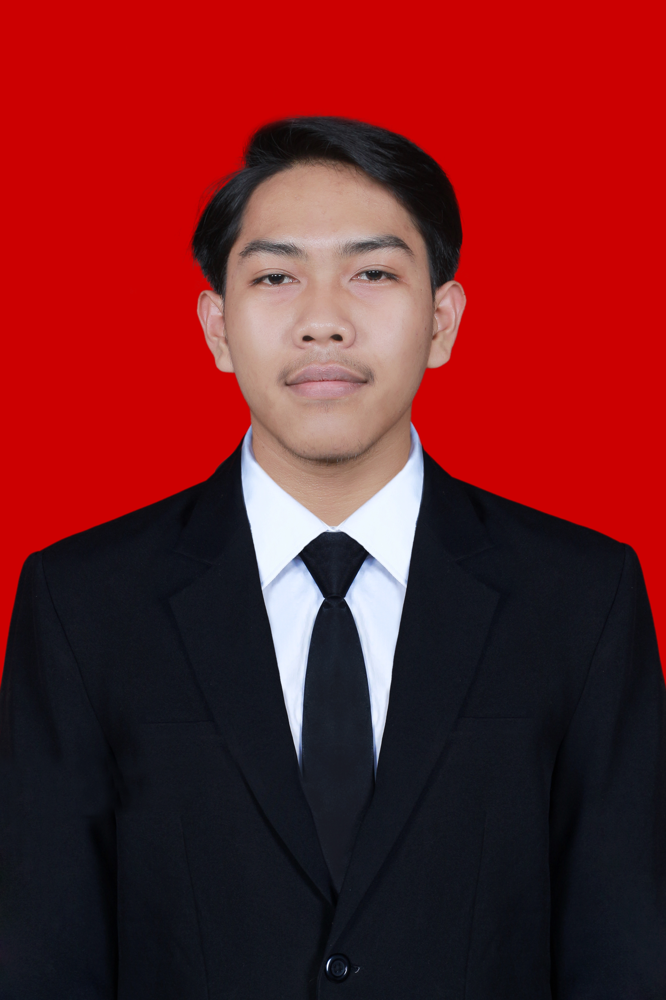
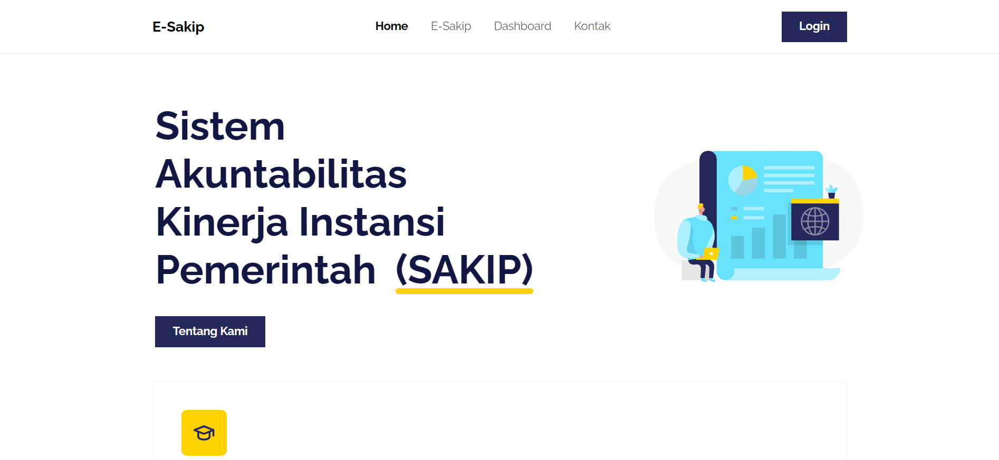
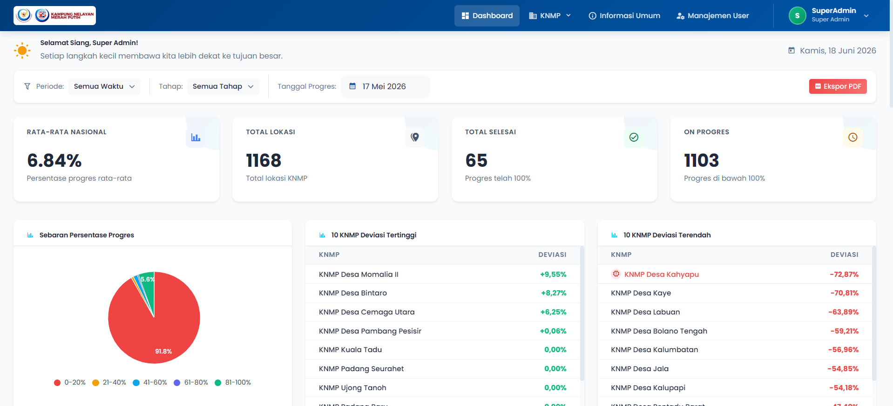
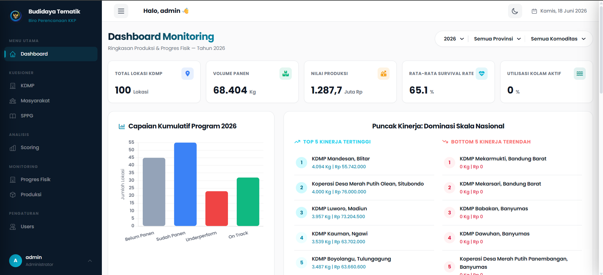
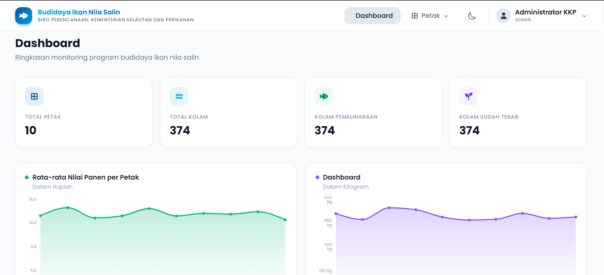
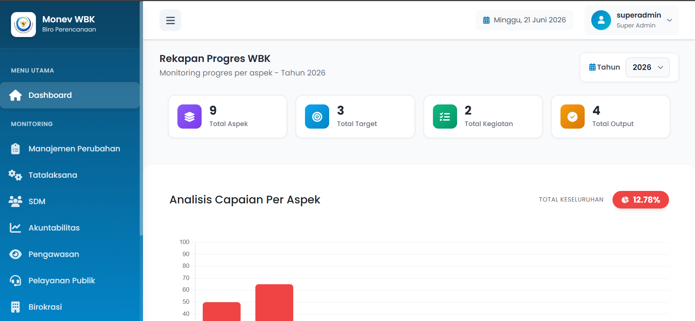
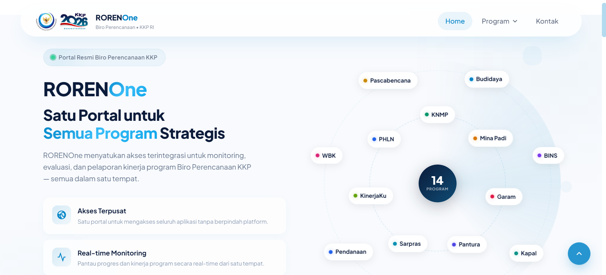

Membangun Aplikasi Web Modern, Dashboard Data, & Sistem Skala Produksi.
Berpengalaman dalam merancang arsitektur web full stack, integrasi RESTful API yang andal, serta antarmuka interaktif yang aman — mulai dari platform analitik data berskala nasional hingga aplikasi web komersial.

Saya adalah seorang Full Stack Developer lulusan S1 Teknik Informatika dari Universitas Muhammadiyah Purwokerto (Cumlaude, IPK 3.59). Dengan rekam jejak yang solid dalam memecahkan masalah rekayasa perangkat lunak melalui program Magang Nasional Kemnaker di Biro Perencanaan Kementerian Kelautan dan Perikanan serta Sekretariat Daerah Kabupaten Banjarnegara, saya mahir dalam membangun sistem dari awal hingga tahap deployment.
Saya memiliki keahlian mendalam pada ekosistem JavaScript modern (React.js, Node.js) dan PHP (Laravel), dengan fokus utama pada perancangan arsitektur database relasional yang optimal, pengembangan RESTful API yang aman, serta implementasi interface pengguna yang intuitif.
Di setiap baris kode yang saya tulis, saya senantiasa memprioritaskan prinsip Clean Code, kemudahan pemeliharaan (maintainability), skalabilitas sistem (scalability), serta optimasi performa demi menghadirkan user experience yang luar biasa dan bernilai nyata.
Antarmuka responsif, performa tinggi, & arsitektur komponen modular
RESTful API yang aman, optimalisasi kueri, & data model relasional
Standar kolaborasi tim, version control, & pipeline deployment
Biro Perencanaan, Kementerian Kelautan dan Perikanan
Proyek Platform E-Commerce
Sekretariat Daerah Kabupaten Banjarnegara
Universitas Muhammadiyah Purwokerto
Sistem informasi pemerintahan dan dashboard analitik berbasis web yang telah dirancang, dibangun, dan diimplementasikan untuk kebutuhan produksi nyata.

Pemerintah DaerahSistem akuntabilitas kinerja instansi digital Kabupaten Banjarnegara yang mengelola dokumen perencanaan strategis, indikator kinerja, pelaporan tahunan, dan evaluasi berkala guna mendukung transparansi tata kelola pemerintahan.

Kementerian Kelautan & PerikananSistem dashboard analitis Kampung Nelayan Modern (KNMP) berbasis web untuk monitoring, evaluasi, dan pelacakan program prioritas Presiden. Mengintegrasikan survei analitik kandidat lokasi di 37 provinsi dan menyajikan visualisasi data yang komprehensif.

Sistem Informasi TematikAplikasi monitoring terintegrasi berbasis web untuk pemantauan, survei lapangan, dan pendataan progres lokasi program budidaya tematik perikanan guna memfasilitasi pengambilan keputusan berbasis data real-time.

Sistem Prioritas NasionalSistem dashboard monitoring program prioritas berbasis web untuk pemantauan sebaran Budidaya Ikan Nila Salin (BINS) di seluruh wilayah Indonesia, dilengkapi visualisasi data analitis secara interaktif.

Zona IntegritasSistem informasi pemantauan zona integritas dan evaluasi program Wilayah Bebas Korupsi (WBK) guna memfasilitasi pelacakan indikator tata kelola, transparansi publik, dan akuntabilitas organisasi.

Portal TerpaduPortal web terpusat yang mengintegrasikan seluruh aplikasi dan sistem informasi internal di lingkungan Biro Perencanaan Kementerian Kelautan dan Perikanan guna meningkatkan efisiensi alur kerja.
Saya terbuka untuk mendiskusikan peluang kerja penuh waktu (full-time), kontrak rekayasa perangkat lunak, maupun konsultasi pengembangan sistem web.